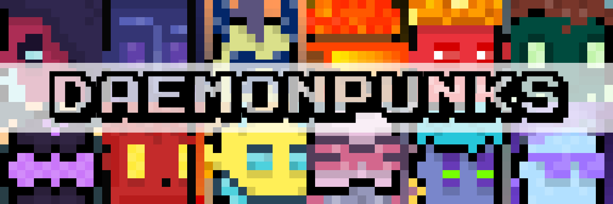
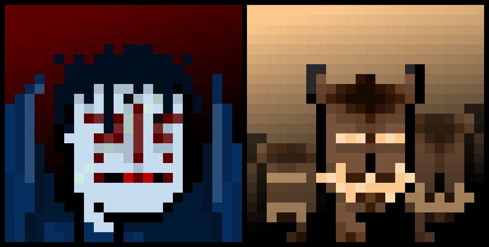
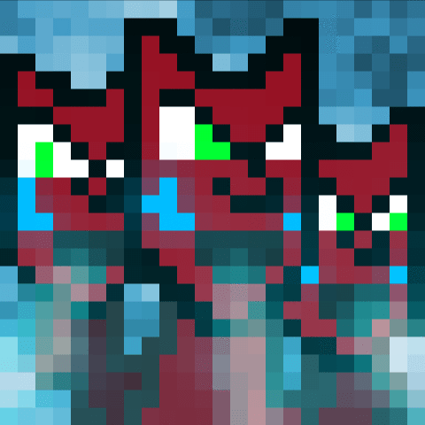
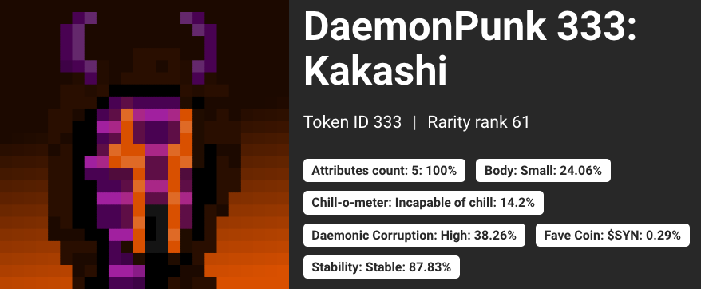

Introducing the gnarliest 24x24 pixel punks you've ever seen,

345 punks corrupted by the remnant subroutines of the lost BitDaemons. All handmade, all 1/1.
Contract address (FTM): 0x22DEa64A0e9ecbB13d2B0dD2d95a91A06DACb23B
Marketplaces (ordered by trading volume, high-to-low):
As we all now know, the BitDaemon mass-transit event was violently interrupted by an as-yet unidentified force. Of the thousands that attempted passage, just 345 BitDaemons successfully transited to the Fantom, where they now reside safely in the care of the DaemonDAO. Far from gone however, it appears that remnant subroutines of some destroyed BitDaemons latched onto the blockchain — corrupting the seminal NFT collection CryptoPunks.

DaemonPunks are a collection of 345 handmade punks minted on the Fantom blockchain. In a nod to the Punk project that started it all, we decided to doggedly adhere to the 24x24 OG punk pixel format, and see how far we could take it with a collection of sick, handcrafted NFTs bursting with personality and Daemonic influence — an attempt at the least-derivative derivative ever.
How did we do?
blah blah

blah blah
Each DaemonPunk is named, and has metadata attributes that handmade collections usually lack:

'Body' refers to the base Punk template we started from for each - the most common are Standard, Small (identical to CryptoPunks' Male and Female), Broad and Tall. There are also a number of rarer base templates (Ape, Orc, Giraffe etc.).
'Chill-o-meter' is a measure of how chill the Punk appears by eye, entirely at the creator's discretion.
'Daemonic Corruption' is once again determined by eye, a rough metric of how many BitDaemon-like attributes the Punk has (glowing eyes, headpieces and mouthpieces etc.)
'Stability' refers to whether the Punk is animated (unstable) or animated (stable) - 12% of DaemonPunks are animated.
Finally, 'Fave Coin' is a mostly non-visual attribute — each Punk has a favourite crypto coin — generally (but not exclusively) Fantom ecosystem tokens.
Near the end of the DaemonPunk collection, an community art competition was launched, with the winners having their Punks minted into the official collection and live-auctioning them in the BitDaemon Discord. Out of 40 entries, these were the six winners: